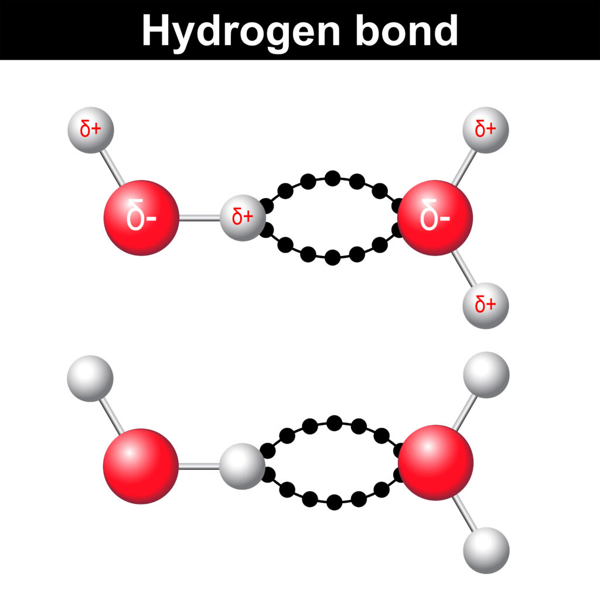

Introduction to pH
The concentration of H+ ions in solution is represented by the pH scale. A low pH indicates high H+ concentration (acidic), whereas a high pH indicates a low H+ concentration (alkaline or basic). The pH scale ranges from 0 to 14, with 7 being neutral. The human body functions optimally at a slightly alkaline pH level of 7.35 to 7.45 in arterial blood.
Acid Production in the Body
Metabolic processes generate both volatile and non-volatile acids. The primary volatile acid is carbonic acid, which can be expelled as carbon dioxide (CO2) through the lungs. Non-volatile acids, such as lactic acid or ketones, cannot be removed via the respiratory system and need to be metabolized or excreted by the kidneys.
Acid-Base Balance Mechanisms
There are three primary mechanisms to maintain acid-base balance:
- Buffer systems: These are immediate and the first line of defense, consisting of a weak acid and its conjugate base. In the blood, the bicarbonate buffer system is predominant. When there is an influx of H+, bicarbonate (HCO3−) can neutralize it by forming carbonic acid (H2CO3).
- Respiratory compensation: A rapid but not long-lasting mechanism. The respiratory system responds to changes in blood pH by altering the rate and depth of breathing. If blood becomes acidic, breathing becomes faster and deeper, expelling more CO2 and raising the pH.
- Renal compensation: The kidneys offer a powerful but slow response, regulating pH by reabsorbing bicarbonate and excreting H+ in urine. In acidosis, the kidneys reabsorb more bicarbonate and secrete more H+ into the urine.
Acid-Base Disorders
There are four primary acid-base disorders:
- Respiratory acidosis: Occurs when there is an increase in CO2, leading to an accumulation of carbonic acid. Causes include hypoventilation, obstructive lung diseases, or central respiratory depression.
- Respiratory alkalosis: Caused by a decrease in CO2, often due to hyperventilation. Anxiety, high altitude, and fever are common causes.
- Metabolic acidosis: Results from an increase in non-volatile acids or a loss of bicarbonate. Causes include diabetic ketoacidosis, lactic acidosis, or renal disease.
- Metabolic alkalosis: Arises from a loss of H+ or an increase in bicarbonate. Vomiting (leading to loss of stomach acid) and excessive intake of antacids are common causes.
Clinical Relevance
Recognizing and managing acid-base imbalances are critical in clinical settings. Symptoms of imbalances can range from fatigue and confusion to more severe signs such as seizures, coma, or even death. Regular measurements of arterial blood gases (ABGs) can help diagnose the type and cause of imbalance. Treatment aims to correct the underlying cause and, if needed, to provide supportive measures like supplemental oxygen or intravenous fluids.
Conclusion
Acid-base physiology plays a pivotal role in maintaining the body's homeostasis. Through an intricate balance of buffer systems, respiratory regulation, and renal mechanisms, the body ensures that the pH of its internal environment remains within a narrow range. Disruptions to this balance can lead to a variety of clinical conditions, making an understanding of acid-base physiology imperative for those in the medical field.